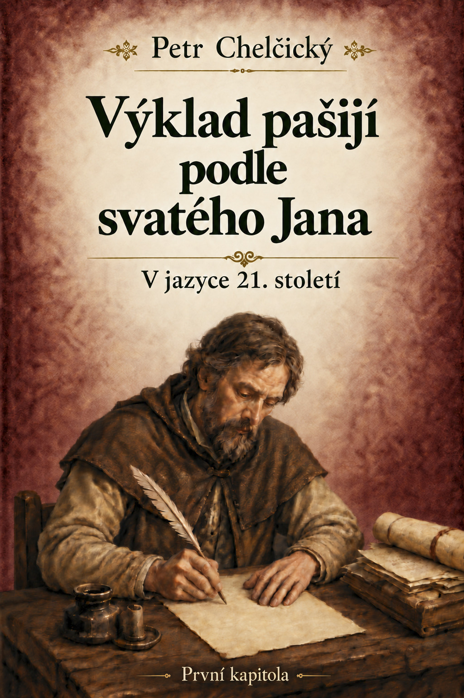

Úvod
Co o nás vypovídá touha po uznání? A rozhoduje jen to, čím procházíme, nebo také způsob, jakým své utrpení přijímáme?
Petr Chelčický ve Výkladu pašijí podle svatého Jana nečte pašijové vyprávění jen jako zprávu o dávné události. Na Kristově utrpení ukazuje lidskou pýchu i to, co znamená opravdová víra.
První kapitola se otevírá působivou scénou, v níž je nevinný Kristus vydán potupné smrti mezi dvěma lotry. Chelčický z ní rozvíjí úvahy o tom, co pokládáme za čest, podle čeho rozpoznáváme dobro a jak se náš vnitřní postoj promítá do jednání.
Text vznikl před staletími, jeho otázky však zůstávají živé: Kde hledáme svou hodnotu? Co činí naše jednání pravdivým? A jak se zachováme, když přijdou těžkosti?